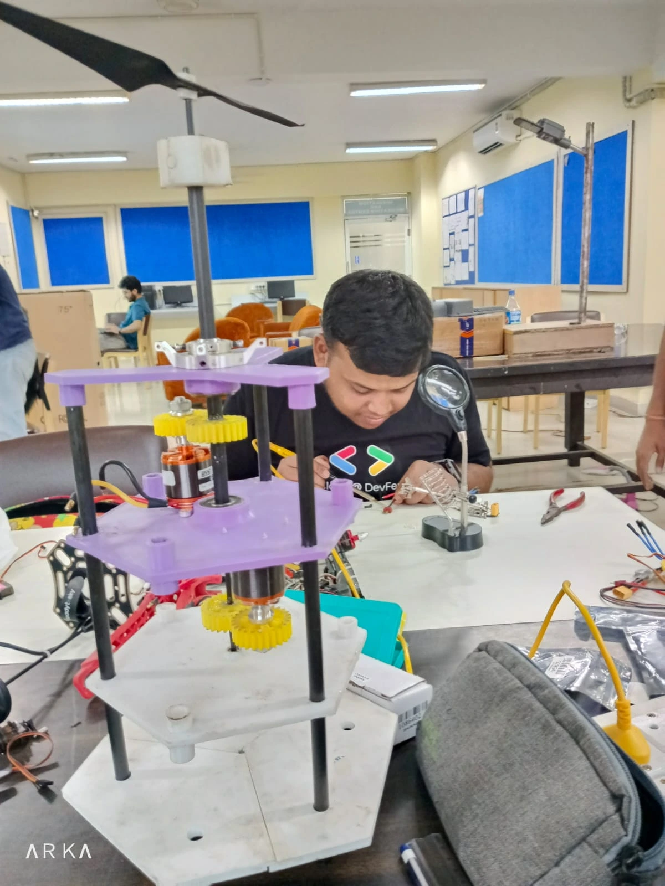
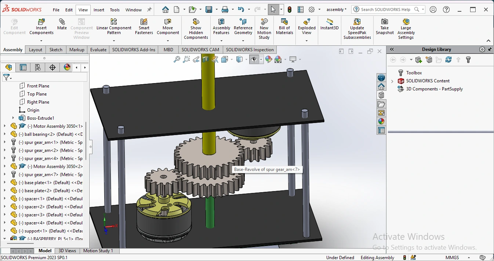
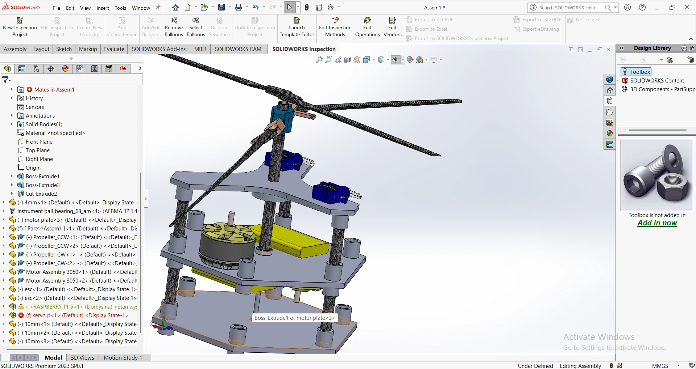
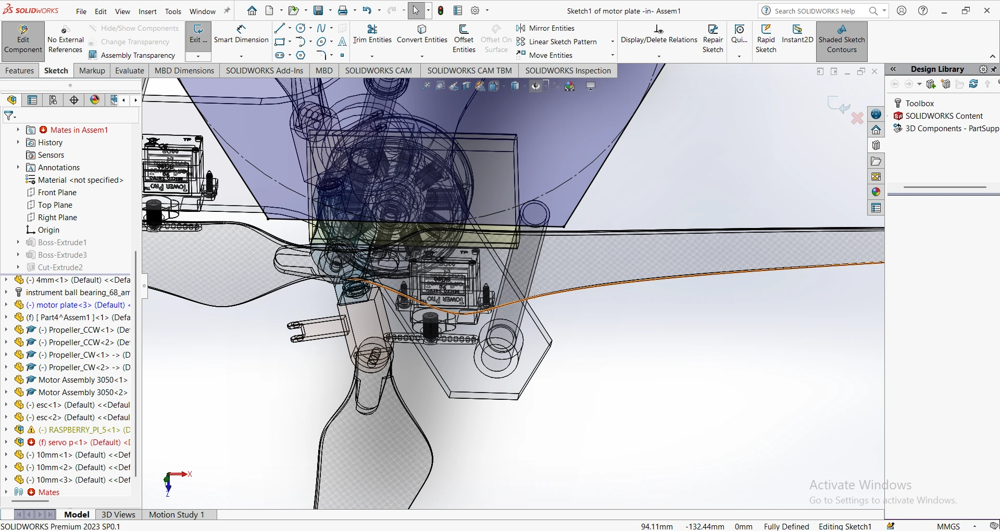

SINGLE-AXIS DRONE
An experimental UAV project focused on single-axis flight control, stabilization and aerospace system development.

Exploring controlled single-axis flight.
The Single-Axis Drone is an experimental UAV platform being developed to investigate aircraft control around a constrained rotational axis.
The project focuses on understanding the relationship between propulsion, aerodynamic forces, actuator response and flight-control algorithms.
The system is being developed as an engineering and experimentation platform rather than as a conventional consumer drone.
What the platform is designed to explore.
Flight Control
- Study single-axis attitude control.
- Investigate actuator response.
- Develop stabilization logic.
- Evaluate control-loop behaviour.
Aerospace Development
- Explore unconventional UAV architectures.
- Integrate propulsion and control systems.
- Test aerodynamic behaviour.
- Develop an experimental flight platform.
From concept to flight test.
Development is being carried out through iterative airframe design, electronics integration and controlled testing.


System architecture.
| Platform | Experimental UAV |
| Control | Single-axis flight-control system |
| Propulsion | Electrically powered propulsion system |
| Electronics | Embedded flight-control electronics |
| Development Stage | Prototype / active development |
The interesting part is the control problem.
Unlike a conventional multirotor where multiple independently controlled motors provide direct attitude authority, this project investigates how a constrained system can generate and control motion around a specific axis.
This makes the project particularly useful for studying feedback control, actuator dynamics, system response and experimental flight stabilization.
Iteration through testing.
Testing is being performed incrementally, beginning with individual actuator and sensor validation before progressing toward integrated flight experiments.


Still in development.
The Single-Axis Drone is currently under development. The platform is being refined through mechanical, electrical and control-system iterations.
Future work will focus on improving flight stability, control response and overall experimental performance.